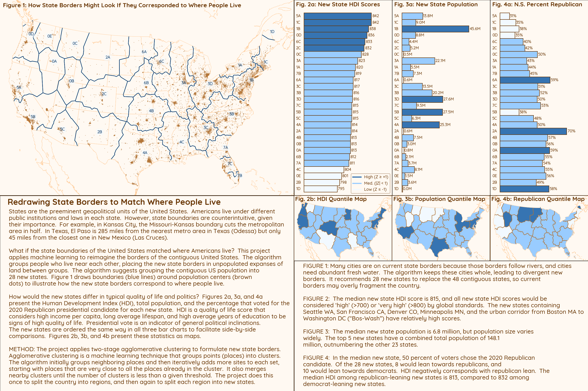

Josh Mendelsohn's GitHub
Project Portfolio
This portfolio provides a showcase for some of the programming activities
conducted on my personal time.
I do these projects for professional and personal reasons:
Professionally, I use these projects to keep my skills sharp and provide
a sample code portfolio that prospective business associates can view.
Personally, I think programming is as close to magic as one can get
in the real world – datamancy? After writing code for so many years, it has
become a favorite tool in my life toolkit. I conducted some of these
projects for the fun of solving data / algorithmic puzzles and some to support
the various life activities that bring me happiness.
To view a project's visualization at full-size, click it. To visit the
project's GitHub repository, click the corresponding link.
Since this gallery showcases personal projects, you may find the offerings
idiosyncratic. See the
Work Projects page for project
descriptions for a selection of my professional work.

My Travels in the United States and Canada
Years ago, I built my first model of American population dynamics. I
resolved to see the population centers I knew so well through data and created a
list of 128 metro areas to visit. This information dashboard tracks my past
progress towards achieving that travel goal and provides planning information
for my future efforts.
Language: Python (.ipynb)
GitHub repository:
us_travels

Finding the Best Travel Weather
To meet my travel goal of visiting 128 metro areas, I have divided
the Unted States and Canada into a series of roadtrips. Good weather is crucial
to a good roadtrip, since my version of "visiting" involves miles of city
exploration walks. This project downloads NOAA weather data and calculates how
many hours of temperate weather happen each day in each city on average. It uses
these calculations to score the pleasantness of taking each roadtrip during a
given week.
Language: Python (.ipynb)
GitHub repository:
travel_weather

Redrawing State Borders to Match Where People Live
U.S. state borders can be idiosyncratic - reflecting historical circumstances
and compromises long forgotten. What if the borders were redrawn to
match to where people live? This project uses agglomerative cluster machine
learning to place state borders in the rural spaces between populous areas, so
that states are more compact and their borders no longer cut through cities.
In addition, the project synthesizes multiple data sources to understand how
the new states would vary in terms of population, development, and politics.
Language: Python (.ipynb)
GitHub repository:
pop_cluster_map

See the World with 22 Data-Driven Travel Suggestions
Who doesn't want to see the world? However, the world is too big for anyone to
visit all of it. This project suggests a country in each of twenty-two
regions around the world, and then selects up to three cities to visit for each
country. Behind the scenes, the project synthesizes multiple datasets with
information on points of interest and ease of travel. The resulting list of
travel destinations won't show an aspiring travel the whole world, but will
provide a very diverse and interesting sample of what is out there.
Language: R
GitHub repository:
travel_suggestions

Redrawing State Borders to Make States More Equal
The United States are not equal. For example, Texas has 51 times Wyoming's
population and 253 times Rhode Island's land area. This project creates an
interactive tool for exploring how targeted changes to state borders could
produce better state borders. As you change the borders, the tool will
automatically score how your changes affect inequality among states.
Development note: Tool currently loads very slowly. Eventually, I will overhaul
this project...
Language: R
GitHub repository:
better_state_borders